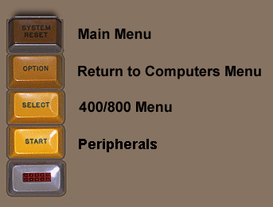
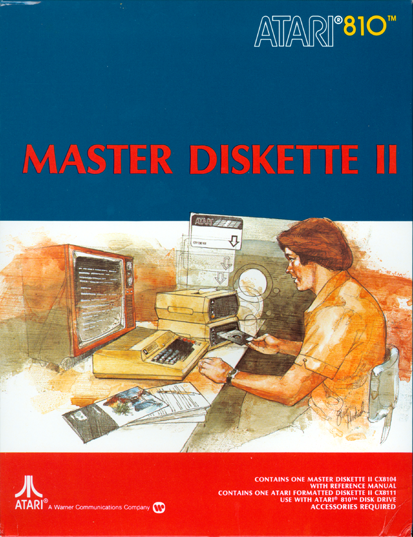

Atari DOS 2.0s .atr disk image

Atari Master Diskette II - Atari software package CX8104 is more commonly referred to as Atari DOS 2.0s (the "s" designating that the DOS is only able to manage Single Density diskettes.
Work in Progress, updated 3/12/2019